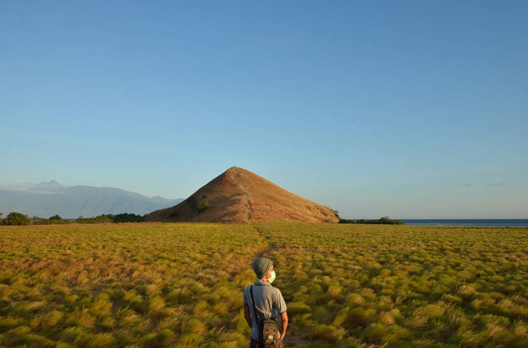
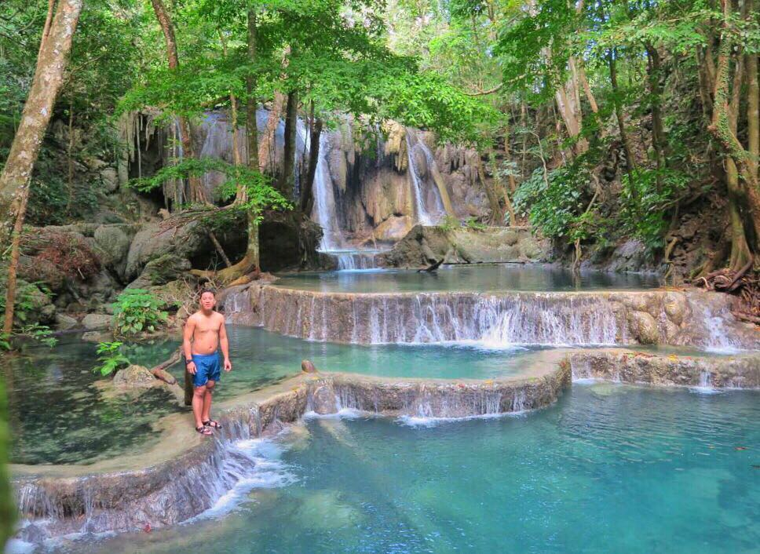
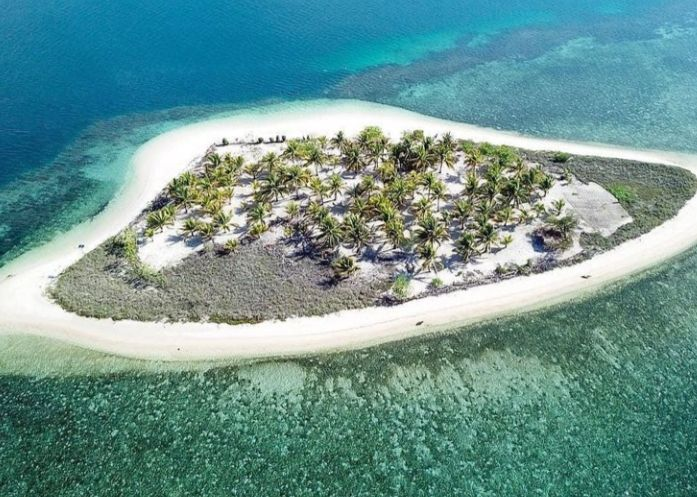
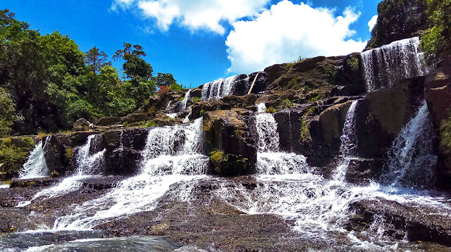
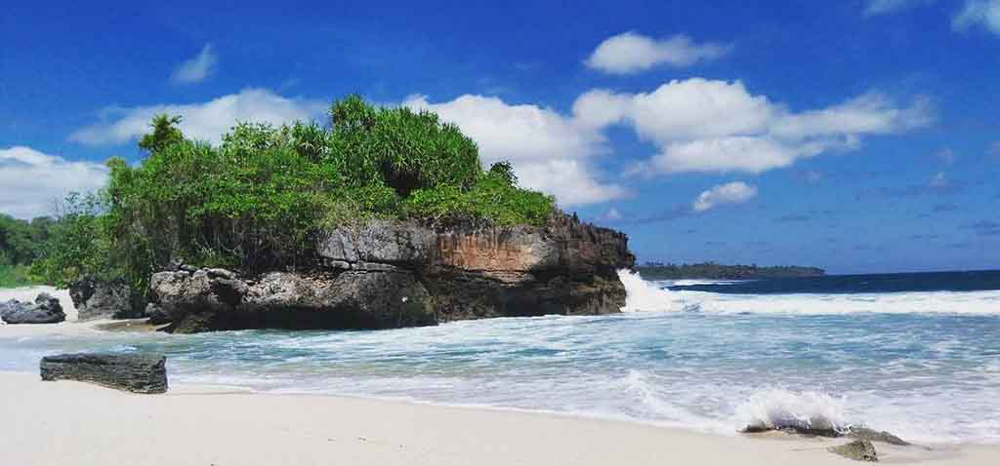
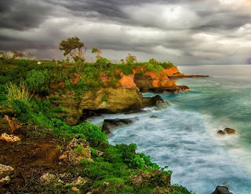

Pariwisata Pulau Sumbawa
Home
Profil
Tempat Wisata
Contact
Pariwisata Sumbawa

Pulau Kenawa ( POTO TANO )
Pulau kecil tak berpenghuni yang meliputi padang rumput & pantai, terkenal untuk berkemah & panorama sunset. Untuk lokasi dari Pulau Kenawa sendiri beralamat di Poto Tano, Kab. Sumbawa, Nusa Tenggara Barat.

Air Terjun Mata Jitu ( PULAU MOYO )
Air Terjun "Mata Jitu" diartikan sebagai mata air yang jatuhnya tepat mengenai kolam di bawahnya. Air Terjun Mata Jitu memiliki empat undak dan tujuh kolam, Oleh penduduk setempat, Untuk mencapai Air Terjun Mata Jitu, pengunjung bisa menyewa perahu nelayan dari Desa Ai Bari di Sumbawa. Dengan waktu tempuh 2 jam perjalanan, Anda akan disuguhi pemandangan Pulau Moyo yang mempesona.

Pulau Bedil ( UTAN )
Pulau Bedil merupakan salah satu pulau dari sekian banyak pulau kecil di Pulau Sumbawa. Terletak di Desa Labu Pade, Kecamatan Utan, Sumbawa, untuk menuju pulau ini anda harus berkendara sekitar satu setengah jam dari Kota Sumbawa Besar
Ai Lemak ( SUMBAWA )
Pantai Ai Lemak, terletak di kawasan Tanjung Menangis. Jarak tempuhnya kini semakin mudah sejak dibangunnya Jembatan SAMOTA (Teluk Saleh, Pulau Moyo, Gunung Tambora). Anda bisa berkendara menggunakan motor ataupun mobil. Memakan waktu kurang lebih 30 menit dari kota Sumbawa Besar. Dari arah Jembatan SAMOTA, anda perlu menempuh jalan raya sekitar 15-20 menit hingga menemukan plang kecil yang menandakan arah menuju Pantai Ai Lemak, di sebelah kiri jalan. Plang ini berada di antara tanaman jagung, jadi anda perlu ekstra perhatian untuk menemukannya. Dari plang tersebut, anda cukup belok kanan dan mengikuti jalan tanah sampai menemukan Pantai Ai Lemak. Meskipun sebagian jalannya masih offroad, tetapi akses menuju pantai indah ini terbilang cukup mudah dan cepat.

Ai Beling (SEMPE , KEC. MOYO HULU )
Air Terjun Ai Beling terletak di Dusun Kuang Amo, Desa Sempe, Brang Rea, Kecamatan Moyo Hulu, Kabupaten Sumbawa. Jika berkendara menggunakan sepeda motor dari Kota Sumbawa Besar/Bandara Sumbawa, anda akan menempuh jarak sekitar 1,5 jam. Ai Beling berasal dari Bahasa Sumbawa yang artinya “air bicara”. Suara air yang mengalir terdengar hingga di kampung terdekat yang berjarak sekitar 5 kilometer dari air terjun ini. Itulah sebabnya mengapa dinamakan Ai Beling.

Pantai Lepu ( LABANGKA )
Di Pantai ini wisatawan akan dibuat tercengang oleh suguhan alamnya yang unik dengan karakter khas pesisir Selatan. Bentangan pasir putih membuat wisatawan semakin merasa nyaman dan menjadi tempat mengambil gambar yang sempurna. Di tepian lain wisatawan akan disuguhi keindahan laguna-laguna kecil yang airnya berkilau menjadi suguhan alami. Pantai Leppu berada sejauh 74 kilometer dari pusat Kota Sumbawa. Lalu berbelok ke kanan menuju Labangka III sejauh 5 kilometer melewati perkebunan warga yang didominasi dengan tanaman jagung. Saat melewati kawasan ini pun menempuh perjalanan yang agak terjal, karena jalannya yang belum diaspal.

Pantai Liang Kewa ( LUNYUK )
Pantai Liang Kewa Lunyuk Kab Sumbawa Barat terletak di provinsi Nusa Tenggara Barat, Indonesia. Tepatnya di Pada Suka, Lunyuk, Kabupaten Sumbawa, Nusa Tenggara Barat
Pantai Raja Kepe ( EMPANG )
Untuk lokasi pantai tersebut berada di desa Lamenta, Kec. Empang, Kabupaten Sumbawa, Nusa Tenggara Barat, bagi yang punya hobi Memancing wajib kesini
Contact Details
Telephone:
085237629759
Email:
Junysaputra1945@gmail.com
Website: